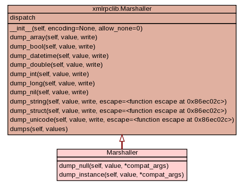

Class Marshaller
source code

Marshaller that understands NoneTypes
FIXME: need to NOT use the static dispatch object it really interferes
with the common code (hence I had to jump through hoops in
proxy/rhnException.py - this will cause issues in the future.
NOTE:
In Python 2.3, the argument list to the Marshaller's dump_* methods
gained an additional argument called 'write'. In order to make our
custom dispatch methods backward-compatible with <= 2.2, we'll
use an optional argument called "compat_args". If supplied, we
assume this is the "write" argument required in >= Python 2.3 and
pass it along if necessary.
|
|
|
|
|
|
|
Inherited from xmlrpclib.Marshaller:
__init__,
dump_array,
dump_bool,
dump_datetime,
dump_double,
dump_int,
dump_long,
dump_nil,
dump_string,
dump_struct,
dump_unicode,
dumps
|
- Overrides:
xmlrpclib.Marshaller.dump_instance
|